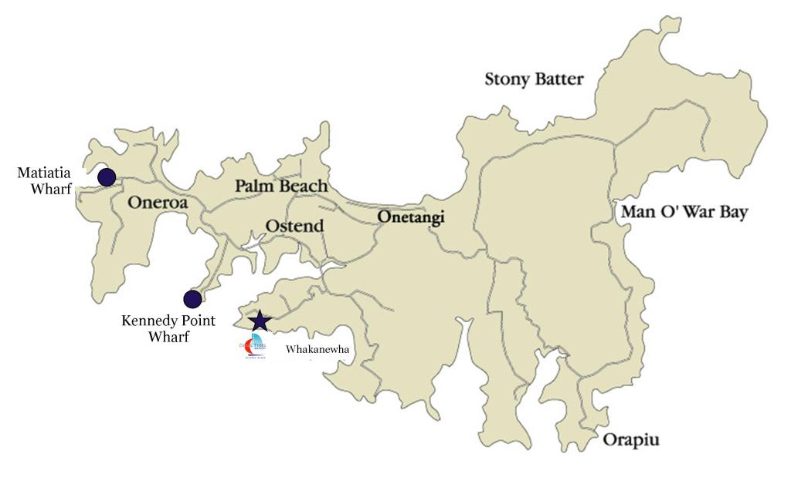

Welcome to Crosstrees Chalet on Waiheke Island
Are you planning a holiday? CrossTrees Chalet is the perfect Waiheke
accommodation for a weekend getaway, mini-break or to celebrate a
special occasion. The chalet is modern and completely self-contained
with quality furnishings and breathtaking sea views from every room.
The Chalet
The setting among native trees is enhanced by the amazing views over the
water. Soak in the spa bath while enjoying the peaceful surroundings.
- Super-king size bed
- Spa bath
- FREE Wi-fi for guests
- Heat pump (aircon)
- Stereo with surround sound system
- Television with Freeview, YouTube and Netflix
- Kitchenette including dishwasher
- Washing machine and dryer
- Cleaning and linen included
Te Whau
CrossTrees is situated at the end of Te Whau, a beautiful peninsula in
the more populated western end of Waiheke Island. Te Whau Peninsula is
known for amazing views to the northern part of the island, south over
Tamaki Strait and back towards Auckland City. Waiheke Island is renowned
for vineyards, olive groves, art and forest walks and all of these can
be discovered within the Te Whau area. Enjoy a swim at high tide,
explore the rock pools at low tide, follow the coastal walkway to
Kuakarau Bay Forest Reserve or follow the walking route known as the Te
Whau Loop.
A Short Drive
Within a few minutes drive is Waiheke’s main supermarket and on
Saturdays, the famous Ostend Market. Did you know that the native
dotterel breeding programme at nearby Whakanewha Regional Park is one of
the most successful in New Zealand? There are some scenic walks and
picnic spots here too. Enjoy a round at Waiheke Golf Club or take a walk
along long, white, sandy Onetangi Beach. Visit the area known as
Vineyard Valley including Stonyridge Vineyard, Wild on Waiheke, Te Motu
and the newly opened Tantalus. We can also supply you with a copy of The
Waiheke Island Art Map - A guide to studios and galleries and the
Waiheke Island of Wine Map. To explore he eastern part of the island we
recommend driving “The Loop Rd” leading to Waiheke's beautiful Man O War
Vineyard.
Special Offer
Don't forget to check out our Special Offers page.
Gift Vouchers
There are a limited number of two night gift vouchers available. To find
out more contact us.
How to get here
We recommend that guests have their own transport as there is so much to
see and do. Car ferry Sealink departs from Half Moon Bay. Fullers
departs from Downtown Auckland Ferry Building (passengers only). If you
arrive as a foot passenger you may want to hire a car. Once you have
made your travel arrangements we can provide driving directions from the
wharf. If you have never been to Waiheke before, it's easy to get around
once you know how.
Make your reservation
Due to limited availability, particularly over the summer peak season,
we recommend booking well in advance. Once you have made your travel
arrangements you can relax and look forward to your holiday.
Availability
How to make a booking.
You can book online by Visa or Mastercard by clicking on the "Book Now"
button above. If you have any questions, you can
contact us
for more information.
Rates per couple
$275 per night. Seven night minimum stay during peak season.
Contact us
to ask about rates for longer stays.
One-night bookings
There is usually a two night minimum stay, however we do understand that
due to other commitments you may sometimes only be able to get away for
one night. Contact us and we will help if we can.
Please note:
Due to limited availability we recommend booking well in advance for
weekends, public holidays and the summer season. If you have any
questions about Crosstrees Chalet or Waiheke Island, please do not
hesitate to
contact us
.
You can book this property on the Bookit link above or contact us to
make an enquiry.
About Us
Welcome to CrossTrees Chalet.
We designed and built CrossTrees so visitors could experience this
beautiful and peaceful part of the island. Guests often ask how we named
the chalet. We love the ocean and 'crosstrees' are the beams at the top
of the mast of huge sailing ships - the place with the best view. As
part of that 'top of the world' feeling, Crosstrees guests look over the
native regenerating forest (protected by a conservation covenant) to the
water.
Special Offers
Three nights or more
Complimentary bottle of Waiheke wine for bookings of three nights or
more (until May 2020).
Follow us on Facebook (crosstreeswaiheke) or Instagram (Waiheke365) for
more special offers.
Contact us regarding discounts for longer stays. We look forward to
hearing from you.
How to get to Waiheke Island
Now that you have made your booking at CrossTrees you need to make
arrangements to get here. There are three ferry companies to choose from
and two main wharves. Making travel arrangements is easy once you know
how.
It really helps to have your own transport if you are here for a few
days because the island is huge…over 90 square kilometers. Most of the
8500 residents live towards the western end of the island but Waiheke’s
secret fort Stony Batter - one of the islands most popular visitor
attractions - is at the far eastern end. The vineyards and olive groves
the island is famous for are scattered throughout. The freedom of having
your own transport means you can explore the island at your convenience
and easily pop down to the supermarket for supplies if needed.
Option 1:
Bring Your Own Car. Of the two wharves, Kennedy Point Wharf (where the
Sealink car ferry arrives) is closest to CrossTrees - there is a scenic
lookout point a short walk up the road that looks directly down on the
wharf. This is a great spot for taking photographs. Most of the car
ferries depart from Half Moon Bay in Auckland.
During the summer season, public holidays and weekends the island is
very popular. We strongly recommend booking car ferries in advance. You
do not need to pre-book as a passenger. You can print off a map with
directions on how to get here from either Kennedy Point Wharf or
Matiatia Wharf.
Option 2:
Hire a Car. Foot passengers travel on Fullers ferry (from Downtown
Auckland) or one of the Sealink car ferries (from Half Moon Bay,
Auckland). There are several rental car companies.
Option 3:
Bring your bike. You can take your bike on the Fullers Ferry for free. A
high level of fitness is required as Waiheke is very hilly in parts.
Option 4:
Taxi. There are several taxi companies. We strongly recommend
pre-booking a taxi. Try Waicabs on 0800 924 222.
Please contact us a few days before your holiday to let us know what
time you expect to arrive. We look forward to meeting you!

How to get to CrossTrees from Matiatia Wharf
We recommend that visitors to Waiheke Island have their own transport as
there is so much to see and do. Fullers ferries leave from Downtown
Auckland Ferry Building (passengers only).
View Route
How to get to CrossTrees from Kennedy Point Wharf
We recommend that visitors to Waiheke Island have their own transport as
there is so much to see and do. Most of the Sealink car ferries leave
from Half Moon Bay, Auckland and arrive at Kennedy Point.
We strongly recommend you make car ferry bookings in advance. If you
travel as a foot passenger you may want to hire a car from an island
based rental company. They offer a pick-up and drop-off service.
View Route